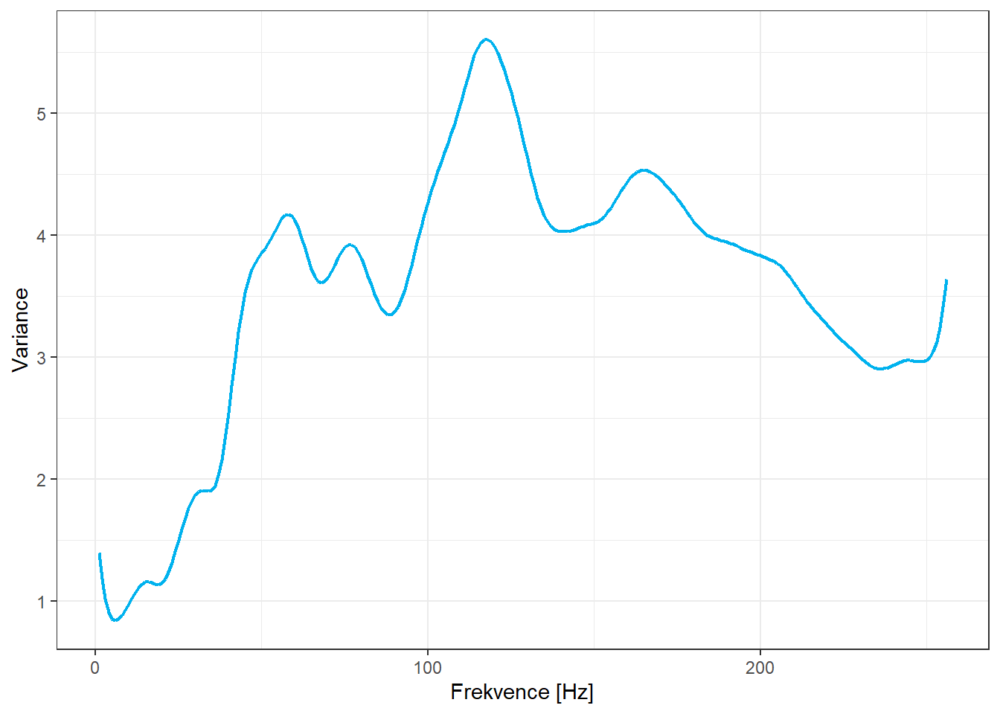
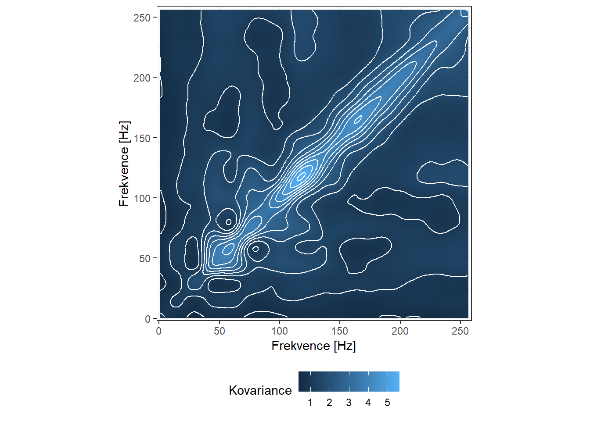

Kapitola 13 Podpůrné materiály pro diplomovou práci
V této poslední kapitole jsou uvedeny zdrojové kódy pro vygenerování grafů a dalších případných materiálů, které jsou použity v diplomové práci. Jedná se především o ilustrativní grafy určitých vlastností a fenoménů spojených s funkcionálními daty.
Kapitola je členěna do sekcí, které odpovídají jednotlivým kapitolám v diplomové práci. Všechny grafy jsou vytvořeny pomocí balíčku ggplot2, který poskytuje celou řadu grafických funkcionalit, pomocí kterých jsme (alespoň subjektivně) schopni dosáhnout podstatně lépe a profesionálněni vypadajících grafických výstupů v porovnání s klasickou grafikou v R.
Všechny grafy jsou uloženy pomocí funkce ggsave() ve formátu pdf nebo tikz, který umožňuje lepší kombinaci grafiky a symbolů v \(\LaTeX\)u.
Code
# nacteme potrebne balicky
library(fda)
library(ggplot2)
library(dplyr)
library(tidyr)
library(ddalpha)
library(tidyverse)
library(patchwork)
library(tikzDevice)
set.seed(42)
options(tz = "UTC")
# nacteni dat
data <- read.delim2('phoneme.txt', header = T, sep = ',')
# zmenime dve promenne na typ factor
data <- data |>
mutate(g = factor(g),
speaker = factor(speaker))
# numericke promenne prevedeme opravdu na numericke
data[, 2:257] <- as.numeric(data[, 2:257] |> as.matrix())
tr_vs_test <- str_split(data$speaker, '\\.') |> unlist()
tr_vs_test <- tr_vs_test[seq(1, length(tr_vs_test), by = 4)]
data$train <- ifelse(tr_vs_test == 'train', TRUE, FALSE)
# vybrane fonemy ke klasifikaci
phoneme_subset <- c('aa', 'ao')
# testovaci a trenovaci data
data_train <- data |> filter(train) |> filter(g %in% phoneme_subset)
data_test <- data |> filter(!train) |> filter(g %in% phoneme_subset)
# odstranime sloupce, ktere nenesou informaci o frekvenci a
# transponujeme tak, aby ve sloupcich byly jednotlive zaznamy
X_train <- data_train[, -c(1, 258, 259, 260)] |> t()
X_test <- data_test[, -c(1, 258, 259, 260)] |> t()
# prejmenujeme radky a sloupce
rownames(X_train) <- 1:256
colnames(X_train) <- paste0('train', data_train$row.names)
rownames(X_test) <- 1:256
colnames(X_test) <- paste0('test', data_test$row.names)
# definujeme vektor fonemu
y_train <- data_train[, 258] |> factor(levels = phoneme_subset)
y_test <- data_test[, 258] |> factor(levels = phoneme_subset)
y <- c(y_train, y_test)13.1 Materiály pro Kapitolu 1
V této sekci uvedeme podpůrné grafy pro první kapitolu diplomové práce.
13.1.1 Funkcionální průměr
Nyní pro data phoneme spočítáme průměr.
Code
t <- 1:256
rangeval <- range(t)
breaks <- t
norder <- 4
bbasis <- create.bspline.basis(rangeval = rangeval,
norder = norder,
breaks = breaks)
curv.Lfd <- int2Lfd(2) # penalizujeme 2. derivaci
# spojeni pozorovani do jedne matice
XX <- cbind(X_train, X_test) |> as.matrix()
XXaa <- XX[, y == phoneme_subset[1]]
lambda.vect <- 10^seq(from = 1, to = 3, length.out = 35) # vektor lambd
gcv <- rep(NA, length = length(lambda.vect)) # prazdny vektor pro ulozebi GCV
for(index in 1:length(lambda.vect)) {
curv.Fdpar <- fdPar(bbasis, curv.Lfd, lambda.vect[index])
BSmooth <- smooth.basis(t, XX, curv.Fdpar) # vyhlazeni
gcv[index] <- mean(BSmooth$gcv) # prumer pres vsechny pozorovane krivky
}
GCV <- data.frame(
lambda = round(log10(lambda.vect), 3),
GCV = gcv
)
# najdeme hodnotu minima
lambda.opt <- lambda.vect[which.min(gcv)]
curv.fdPar <- fdPar(bbasis, curv.Lfd, lambda.opt)
BSmooth <- smooth.basis(t, XX, curv.fdPar)
XXfd <- BSmooth$fd
fdobjSmootheval <- eval.fd(fdobj = XXfd, evalarg = t)
## pouze pro aa
lambda.vect <- 10^seq(from = 1, to = 3, length.out = 35) # vektor lambd
gcv <- rep(NA, length = length(lambda.vect)) # prazdny vektor pro ulozebi GCV
for(index in 1:length(lambda.vect)) {
curv.Fdpar <- fdPar(bbasis, curv.Lfd, lambda.vect[index])
BSmoothaa <- smooth.basis(t, XXaa, curv.Fdpar) # vyhlazeni
gcv[index] <- mean(BSmoothaa$gcv) # prumer pres vsechny pozorovane krivky
}
GCV <- data.frame(
lambda = round(log10(lambda.vect), 3),
GCV = gcv
)
# najdeme hodnotu minima
lambda.opt <- lambda.vect[which.min(gcv)]
curv.fdPar <- fdPar(bbasis, curv.Lfd, lambda.opt)
BSmoothaa <- smooth.basis(t, XXaa, curv.fdPar)
XXfdaa <- BSmoothaa$fd
fdobjSmoothevalaa <- eval.fd(fdobj = XXfdaa, evalarg = t)
# prumer
meanfd <- mean.fd(XXfdaa)
fdmean <- eval.fd(fdobj = meanfd, evalarg = t)Code
n <- dim(XX)[2]
DFsmooth <- data.frame(
t = rep(t, n),
time = factor(rep(1:n, each = length(t))),
Smooth = c(fdobjSmootheval),
Phoneme = rep(y, each = length(t))) |>
filter(Phoneme == 'aa')
DFmean <- data.frame(
t = rep(t, 2),
Mean = c(fdmean, fdmean),
Phoneme = factor(rep(phoneme_subset, each = length(t)),
levels = levels(y))
) |> filter(Phoneme == 'aa')
# tikz(file = "figures/DP_kap1_mean.tex", width = 6, height = 5)
DFsmooth |>
filter(time %in% as.character(1:100)) |>
ggplot(aes(x = t, y = Smooth)) +
geom_line(aes(group = time), linewidth = 0.2, colour = 'deepskyblue2',
alpha = 0.6) +
theme_bw() +
labs(x = 'Frekvence [Hz]',
y = 'log-periodogram',
colour = 'Phoneme') +
scale_colour_discrete(labels = phoneme_subset) +
geom_line(data = DFmean, aes(x = t, y = Mean,
group = Phoneme),
linewidth = 1, linetype = 'solid', colour = 'grey2') +
theme(legend.position = 'none')Obrázek 13.1: Vykreslení prvních 100 vyhlazených pozorovaných křivek. Černou čarou je zakreslen průměr.
13.1.2 Variance
Code
dfs <- data.frame(
time = t,
value = c(fdobjSmoothevalaa))
df <- data.frame(dfs, fdmean = fdmean, fdvar = diag(fdvar))
# tikz(file = "figures/DP_kap1_variance.tex", width = 6, height = 5)
# df <- df[seq(1, length(df$time), length = 1001), ]
ggplot(data = df, aes(x = time, y = fdvar)) +
geom_line(color = 'deepskyblue2', linewidth = 0.8) +
labs(x = 'Frekvence [Hz]',
y = 'Variance',
colour = 'Phoneme') +
theme_bw()
13.1.3 Kovariance a Korelace
Code
fdcor <- cor.fd(t, XXfdaa)
df <- merge(t, t)
df <- data.frame(df, fdcov = c(fdvar), fdcor = c(fdcor))
df <- df[seq(1, length(df$x), length = 68001), ]
# tikz(file = "figures/DP_kap1_cov.tex", width = 6, height = 6)
p1 <- ggplot(data = df, aes (x, y, z = fdcov)) +
geom_raster(aes(fill = fdcov)) +
geom_contour(colour = "white") +
labs(x = 'Frekvence [Hz]',
y = 'Frekvence [Hz]',
fill = 'Kovariance') +
coord_fixed(ratio = 1) +
theme_bw() +
theme(legend.position = 'bottom') +
scale_y_continuous(expand = c(0,0) + 0.01) +
scale_x_continuous(expand = c(0,0) + 0.01)
p1
Code
# dev.off()
# ggsave("figures/DP_kap1_cov.tex", width = 6, height = 6, device = tikz)
# tikz(file = "figures/DP_kap1_cor.tex", width = 6, height = 6)
p2 <- ggplot(data = df, aes (x, y, z = fdcor)) +
geom_raster(aes(fill = fdcor)) +
geom_contour(colour = "white") +
labs(x = 'Frekvence [Hz]',
y = 'Frekvence [Hz]',
fill = 'Korelace') +
coord_fixed(ratio = 1) +
theme_bw() +
theme(legend.position = 'bottom') +
scale_y_continuous(expand = c(0,0) + 0.01) +
scale_x_continuous(expand = c(0,0) + 0.01)
p213.1.4 B-splinová báze
Podívejme se na princip, jak se pomocí splinové báze dostaneme od diskrétních naměřených hodnot k funkcionálním datům.
Uvažujme pro přehlednost opět data phoneme a pouze malý počet bázových funkcí. Uvedeme tři obrázky, jeden se znárorněnými bázovými funkcemi, druhý s bázovými funkcemi přenásobenými vypočtenou hodnotou parametru a třetí výslednou křivku poskládanou sečtením jednotlivých přeškálovaných bázových funkcí.
13.1.4.1 pro norder = 2
Code
Code
fdBSmootheval <- eval.fd(fdobj = BSmooth$fd, evalarg = df$x)
fdB <- eval.basis(basisobj = bbasis, evalarg = df$x)
basisdf1 <- data.frame(bs = c(fdB),
x = df$x,
basis = rep(colnames(fdB), each = length(df$x)))
ebchan <- fdB * matrix(rep(BSmooth$fd$coefs, each = length(df$x)),
nrow = length(df$x))
basisdf2 <- data.frame(bs = c(ebchan),
x = df$x,
basis = rep(colnames(fdB), each = length(df$x)))
#tikz(file = "figures/DP_kap1_Bbasis_norder2.tex", width = 12, height = 4)
# samotna baze
p1 <- ggplot(data = basisdf1, aes(x = x, y = bs * 10, colour = basis)) +
geom_vline(xintercept = breaks, linetype = "dotted", linewidth = 0.1, colour = 'grey') +
geom_line() +
labs(x = 'Frekvence [Hz]',
y = 'B-splinová báze',
colour = 'Foném') +
theme_classic() +
guides(colour = FALSE) +
ylim(c(0, 22)) +
scale_color_brewer(palette = 'Blues')
# prenasobena koeficienty
p2 <- ggplot(data = basisdf2, aes(x = x, y = bs, colour = basis)) +
geom_vline(xintercept = breaks, linetype = "dotted", linewidth = 0.1, colour = 'grey') +
geom_line() +
labs(x = 'Frekvence [Hz]',
y = 'B-splinová báze (škálovaná)',
colour = 'Foném') +
theme_classic() +
guides(colour = FALSE) +
ylim(c(0, 22)) +
scale_color_brewer()
# vyhlazena data
p3 <- ggplot(data = df, aes(x, y)) +
geom_vline(xintercept = breaks, linetype = "dotted", linewidth = 0.1, colour = 'grey') +
geom_point(colour = 'deepskyblue2', size = 0.8, alpha = 0.75) +
geom_line(aes(y = fdBSmootheval)) +
theme_classic() +
#guides (colour = FALSE) +
ylim(c(0, 22)) +
labs(x = 'Frekvence [Hz]',
y = 'Log-periodogram',
colour = 'Foném')
(p1 | p2 | p3)Obrázek 13.2: B-spliny.
13.1.4.2 pro norder = 4
Code
Code
fdBSmootheval <- eval.fd(fdobj = BSmooth$fd, evalarg = df$x)
fdB <- eval.basis(basisobj = bbasis, evalarg = df$x)
basisdf1 <- data.frame(bs = c(fdB),
x = df$x,
basis = rep(colnames(fdB), each = length(df$x)))
ebchan <- fdB * matrix(rep(BSmooth$fd$coefs, each = length(df$x)),
nrow = length(df$x))
basisdf2 <- data.frame(bs = c(ebchan),
x = df$x,
basis = rep(colnames(fdB), each = length(df$x)))
#tikz(file = "figures/DP_kap1_Bbasis_norder4.tex", width = 12, height = 4)
# samotna baze
p1 <- ggplot(data = basisdf1, aes(x = x, y = bs * 10, colour = basis)) +
geom_vline(xintercept = breaks, linetype = "dotted", linewidth = 0.1, colour = 'grey') +
geom_line() +
labs(x = 'Frekvence [Hz]',
y = 'B-splinová báze',
colour = 'Foném') +
theme_classic() +
guides(colour = FALSE) +
ylim(c(0, 22)) +
scale_color_brewer(palette = 'Blues')
# prenasobena koeficienty
p2 <- ggplot(data = basisdf2, aes(x = x, y = bs, colour = basis)) +
geom_vline(xintercept = breaks, linetype = "dotted", linewidth = 0.1, colour = 'grey') +
geom_line() +
labs(x = 'Frekvence [Hz]',
y = 'B-splinová báze (škálovaná)',
colour = 'Foném') +
theme_classic() +
guides(colour = FALSE) +
ylim(c(0, 22)) +
scale_color_brewer()
# vyhlazena data
p3 <- ggplot(data = df, aes(x, y)) +
geom_vline(xintercept = breaks, linetype = "dotted", linewidth = 0.1, colour = 'grey') +
geom_point(colour = 'deepskyblue2', size = 0.8, alpha = 0.75) +
geom_line(aes(y = fdBSmootheval)) +
theme_classic() +
#guides (colour = FALSE) +
ylim(c(0, 22)) +
labs(x = 'Frekvence [Hz]',
y = 'Log-periodogram',
colour = 'Foném')
(p1 | p2 | p3)Obrázek 13.3: B-spliny.
13.1.5 Fourierova báze
Podívejme se na princip, jak se pomocí Fourierovské báze dostaneme od diskrétních naměřených hodnot k funkcionálním datům.
Uvažujme pro přehlednost opět data phoneme a pouze malý počet bázových funkcí. Uvedeme tři obrázky, jeden se znárorněnými bázovými funkcemi, druhý s bázovými funkcemi přenásobenými vypočtenou hodnotou parametru a třetí výslednou křivku poskládanou sečtením jednotlivých přeškálovaných bázových funkcí.
13.1.5.1 pro nbasis = 5
Code
Code
fdBSmootheval <- eval.fd(fdobj = FSmooth$fd, evalarg = df$x)
fdF <- eval.basis(basisobj = fbasis, evalarg = df$x)
basisdf1 <- data.frame(bs = c(fdF),
x = df$x,
basis = rep(colnames(fdF), each = length(df$x)))
ebchan <- fdF * matrix(rep(FSmooth$fd$coefs, each = length(df$x)),
nrow = length(df$x))
basisdf2 <- data.frame(bs = c(ebchan),
x = df$x,
basis = rep(colnames(fdF), each = length(df$x)))
# tikz(file = "figures/DP_kap1_Fbasis_nbasis5.tex", width = 12, height = 4)
# samotna baze
p1 <- ggplot(data = basisdf1, aes(x = x, y = bs, colour = basis)) +
# geom_vline(xintercept = breaks, linetype = "dotted", linewidth = 0.1, colour = 'grey') +
geom_line() +
labs(x = 'Frekvence [Hz]',
y = 'Fourierova báze',
colour = 'Foném') +
theme_classic() +
guides(colour = FALSE) +
#ylim(c(0, 22)) +
scale_color_brewer(palette = 'Blues')
# prenasobena koeficienty
p2 <- ggplot(data = basisdf2, aes(x = x, y = bs, colour = basis)) +
# geom_vline(xintercept = breaks, linetype = "dotted", linewidth = 0.1, colour = 'grey') +
geom_line() +
labs(x = 'Frekvence [Hz]',
y = 'Fourierova báze (škálovaná)',
colour = 'Foném') +
theme_classic() +
guides(colour = FALSE) +
#ylim(c(0, 22)) +
scale_color_brewer()
# vyhlazena data
p3 <- ggplot(data = df, aes(x, y)) +
# geom_vline(xintercept = breaks, linetype = "dotted", linewidth = 0.1, colour = 'grey') +
geom_point(colour = 'deepskyblue2', size = 0.8, alpha = 0.75) +
geom_line(aes(y = fdBSmootheval)) +
theme_classic() +
#guides (colour = FALSE) +
ylim(c(0, 22)) +
labs(x = 'Frekvence [Hz]',
y = 'Log-periodogram',
colour = 'Foném')
(p1 | p2 | p3)Obrázek 13.4: Fourierova baze.
13.1.5.2 pro nbasis = 7
Code
Code
fdBSmootheval <- eval.fd(fdobj = FSmooth$fd, evalarg = df$x)
fdF <- eval.basis(basisobj = fbasis, evalarg = df$x)
basisdf1 <- data.frame(bs = c(fdF),
x = df$x,
basis = rep(colnames(fdF), each = length(df$x)))
ebchan <- fdF * matrix(rep(FSmooth$fd$coefs, each = length(df$x)),
nrow = length(df$x))
basisdf2 <- data.frame(bs = c(ebchan),
x = df$x,
basis = rep(colnames(fdF), each = length(df$x)))
# tikz(file = "figures/DP_kap1_Fbasis_nbasis7.tex", width = 12, height = 4)
# samotna baze
p1 <- ggplot(data = basisdf1, aes(x = x, y = bs, colour = basis)) +
# geom_vline(xintercept = breaks, linetype = "dotted", linewidth = 0.1, colour = 'grey') +
geom_line() +
labs(x = 'Frekvence [Hz]',
y = 'Fourierova báze',
colour = 'Foném') +
theme_classic() +
guides(colour = FALSE) +
#ylim(c(0, 22)) +
scale_color_brewer(palette = 'Blues')
# prenasobena koeficienty
p2 <- ggplot(data = basisdf2, aes(x = x, y = bs, colour = basis)) +
# geom_vline(xintercept = breaks, linetype = "dotted", linewidth = 0.1, colour = 'grey') +
geom_line() +
labs(x = 'Frekvence [Hz]',
y = 'Fourierova báze (škálovaná)',
colour = 'Foném') +
theme_classic() +
guides(colour = FALSE) +
#ylim(c(0, 22)) +
scale_color_brewer()
# vyhlazena data
p3 <- ggplot(data = df, aes(x, y)) +
# geom_vline(xintercept = breaks, linetype = "dotted", linewidth = 0.1, colour = 'grey') +
geom_point(colour = 'deepskyblue2', size = 0.8, alpha = 0.75) +
geom_line(aes(y = fdBSmootheval)) +
theme_classic() +
#guides (colour = FALSE) +
ylim(c(0, 22)) +
labs(x = 'Frekvence [Hz]',
y = 'Log-periodogram',
colour = 'Foném')
(p1 | p2 | p3)Obrázek 13.5: Fourierova baze.
13.2 Materiály pro Kapitolu 2
Ve druhé sekci se podíváme na materiály pro Kapitolu 2 diplomové práce.
Bude nás zajímat vliv vyhlazovacího parametru \(\lambda\) na výslednou odhadnutou křivku z diskrétních dat. Dále se podíváme na funkcionální analýzu hlavních komponent.
13.2.1 Volba \(\lambda\)
Začněme volbou vyhlazovacího parametru \(\lambda > 0\). S rostoucí hodnotou \(\lambda\) dáváme v penalizované sumě čtverců \[ SS_{pen} = (\boldsymbol y - \boldsymbol B \boldsymbol c)^\top (\boldsymbol y - \boldsymbol B \boldsymbol c) + \lambda \boldsymbol c^\top \boldsymbol R \boldsymbol c \] větší váhu penalizačnímu členu, tedy dostaneme více penalizované, více hladké křivky blížící se lineární funkci. Vykreslíme si obrázky, ve kterých bude zřejmé, jak se s měnící se hodnotou \(\lambda\) mění výsledná vyhlazená křivka.
Ke znázornění tohoto chování použijeme data phoneme z jedné z předchozích kapitol. Vybereme jedno zajímavé pozorování a ukážeme na něm toto chování.
Za uzly bereme celý vektor frekvencí (1 až 256 Hz), standardně uvažujeme kubické spliny, proto volíme (implicitní volba v R) norder = 4.
Budeme penalizovat druhou derivaci funkcí.
Code
Zvolme nyní nějakých 6 hodnot pro vyhlazovací parametr \(\lambda\) a spočítejme vyhlazené křivky pro jeden vybraný záznam.
Code
lambdas <- c(0.01, 0.1, 50, 500, 10000, 1000000) # vektor lambd
tt <- seq(min(t), max(t), length = 1001)
# objekt, do ktereho ulozime hodnoty
res_plot <- matrix(NA, ncol = length(lambdas), nrow = length(tt))
for(i in 1:length(lambdas)) {
curv.fdPar <- fdPar(bbasis, curv.Lfd, lambdas[i])
BSmooth <- smooth.basis(t, XX, curv.fdPar)
XXfd <- BSmooth$fd
fdobjSmootheval <- eval.fd(fdobj = XXfd, evalarg = tt)[, 1]
res_plot[, i] <- fdobjSmootheval
}Code
options(scipen = 999)
library(scales)
lam_labs <- paste0('Hodnota vyhlazovacího parametru: ', lambdas)
names(lam_labs) <- lambdas
# tikz(file = "figures/DP_kap2_lambdas.tex", width = 9, height = 6)
data.frame(time = rep(tt, length(lambdas)),
value = c(res_plot),
lambda = rep(lambdas, each = length(tt))) |>
mutate(lambda = factor(lambda)) |>
ggplot(aes(x = time, y = value, colour = lambda)) +
geom_point(data = data.frame(time = rep(t, length(lambdas)),
value = rep(c(data[5, 2:257]) |> unlist(), length(lambdas)),
lambda = rep(lambdas, each = length(t))) |>
mutate(lambda = factor(lambda)),
alpha = 0.5, size = 0.75) +
geom_line(linewidth = 0.5) +
facet_wrap(~lambda, ncol = 3, nrow = 2, labeller = labeller(lambda = lam_labs)) +
theme_bw() +
theme(legend.position = 'none') +
labs(x = 'Frekvence [Hz]',
y = 'Log-periodogram',
colour = 'Foném') Obrázek 13.6: Log-periodogram vybraného fonému pro zvolené hodnoty vyhlazovacího parametru.